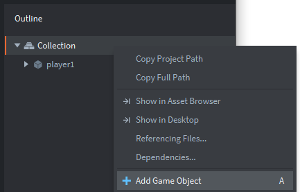
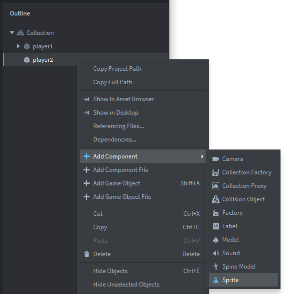
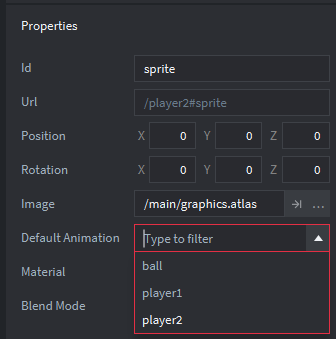

Tutorials for 2D games projects
Pong | Creating the game objects: player 2.
We can now add a second paddle to the game for player 2 by repeating the steps we took for player 1.
- In the outline panel, right click, 'Collection' and choose, 'Add Game Object'. Note the keyboard shortcut for this is just pressing the letter A.

- In the properties panel, change the 'Id' property from 'go' to 'player2'.
- In the outline panel, right click the 'player2' game object and choose, 'Add Component', 'Sprite'.

There is no need to change the Id of this because 'sprite' accurately describes what it is.
- In the properties panel, change the image property by clicking the three dots and choosing: /main/graphics.atlas
- Set the 'Default animation' property to player2.

We need to move the paddle to its starting position.
- Click player2 game object in the outline panel (make sure it is the object you are selecting and not the sprite).
In the properties panel set the X property to: 920 and the Y property to: 320.
Note the Z property is the position in 3D space and therefore also the order of the objects on the screen. Think of it as layering in graphics applications. - Save the changes by pressing CTRL-S or 'File', 'Save All'.
Now that we have both player objects in the game we can add the ball. Stage 3c >
 Craig'n'Dave | Version 1.3
Craig'n'Dave | Version 1.3